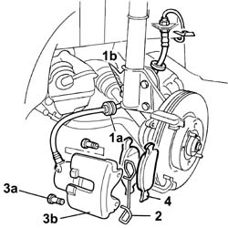
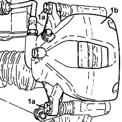
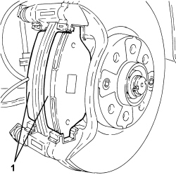

3310A60 front brake pads - replace
- Path
- Procedures > 33 BRAKES > 3310 DISC BRAKES > 3310A FRONT DISC BRAKES > 3310A60 front brake pads - replace
- Kind
- repair procedure (removal / refitting; the operation number is the code)
- Applies to
- all engines; all production periods
- Interactive page
- https://sloeber94.github.io/elrnDB-fDbl/en/#/2584629
Applies to: engines: 1.2 8v, 1.6 16v, 1.3 JTD 16V, 1.9 JTD 8V, 1.9 DIESEL; all production periods
 Removing
Removing
 Refitting
RefittingPosition the vehicle on the lift.
Op. 4450B12 FRONT WHEELS (TWO) - R.R..
1. Release the brake pipe rubber retainer (1a) from its seat (1b) on the shock absorber.
2. Remove the clip fixing the brake caliper to the bracket.
3. Undo the bolts (3a), then move aside the front brake caliper assembly (3b).
4. Remove the brake pads from the calliper and replace.

Applies to: engines: 1.2 8v, 1.6 16v, 1.3 JTD 16V, 1.9 JTD 8V, 1.9 DIESEL; all production periods
Refitting
RemovingMeasure the thickness of the brake pads and check that the thickness is less than the minimum permissible level.
Measurement | Value | ||
|---|---|---|---|
- | Minimum permitted thickness (mm) | 1.5 |
Fit new brake pads to the calliper.
Fit the front brake caliper on the disc.
Secure the brake caliper by tightening both rear bolts to the specified torque.
Fastening | Component | dia | Value (daNm) | |
|---|---|---|---|---|
- | Bolt | FRONT DISC BRAKE CALIPERS COMPLETE | M10 X 1.25 | 2.5 ÷ 3 |
Fit the calliper spring and engage correctly.
Secure the brake pipe to the shock absorber.
Op. 4450B12 FRONT WHEELS (TWO) - R.R..
Remove the vehicle from the lift.
Applies to: engines: 1.4 8v, 1.6 16v, 1.3 JTD 16V, 1.9 JTD 8V; production: da 12/03; only with equipment: MY 2005
Removing
Refitting- Position the vehicle on a lift.
Op. 4450B12 FRONT WHEELS (TWO) - R.R.
1. Uncrew bolts (1a) securing brake caliper (1b) to the bracket and remove from its seat.

Applies to: engines: 1.4 8v, 1.6 16v, 1.3 JTD 16V, 1.9 JTD 8V; production: da 12/03; only with equipment: MY 2005
- Secure the brake caliper to the suspension spring.
1. Remove the front brake pads from the bracket.

Applies to: engines: 1.4 8v, 1.6 16v, 1.3 JTD 16V, 1.9 JTD 8V; production: da 12/03; only with equipment: MY 2005
Refitting
Removing- Grease the brake caliper and bracket in the areas of the pad support surfaces.
- Place the front brake pads in their housings.
- Fit the brake caliper from its seat and tighten the bolts to the recommended torque.
Value daNm | Fastening | Component | dia | |
|---|---|---|---|---|
- | 2.7 ÷ 3.3 | Bolt | Front brake calipers - bracket side | - |
Op. 4450B12 FRONT WHEELS (TWO) - R.R.
- Remove the vehicle from the lift.